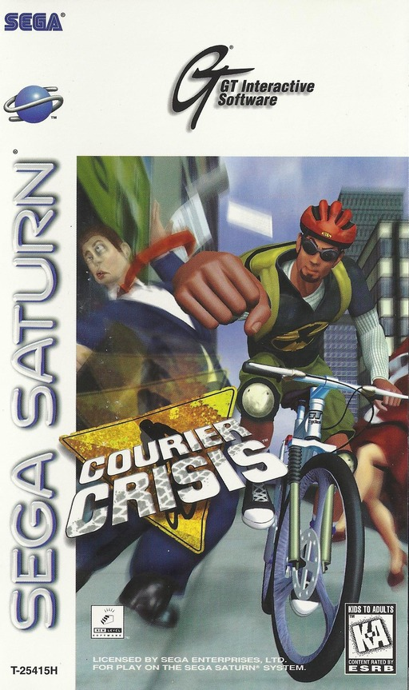
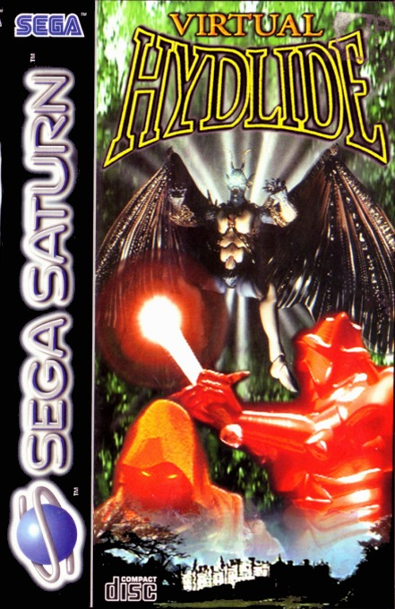
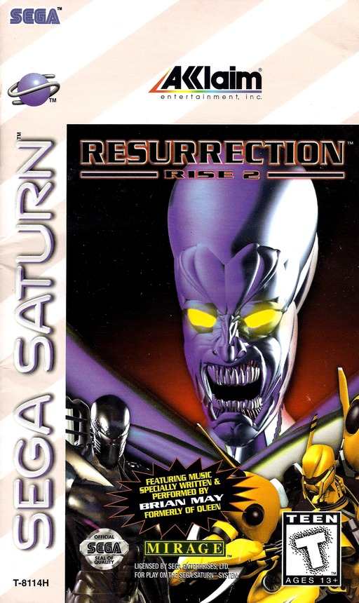
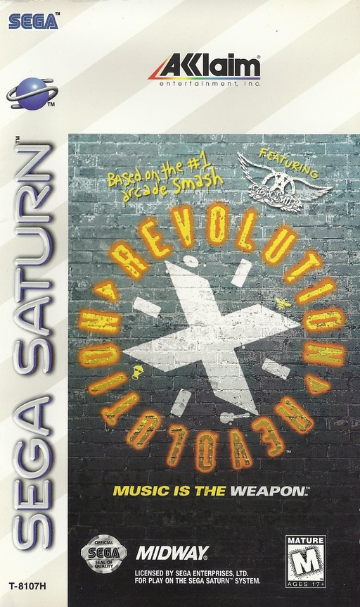
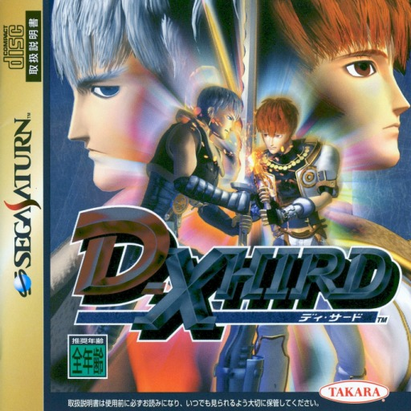
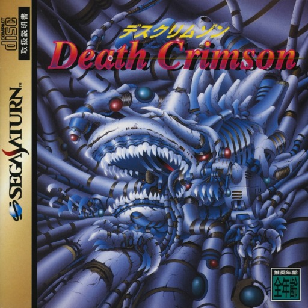

LA CONSOLA DE LAS JOYAS RARAS... Y DE ESTOS ACCIDENTES
02
EL CRITERIO
DEL MALO AL PEOR
Para el Saturn no existe una lista seria de los peores, asi que mezclamos notas de la prensa de la epoca (GameSpot, Next Generation, Sega Saturn Magazine), listas de peores de superheroes, el Awful Block de Games Done Quick y la encuesta de lectores japoneses. Y dejamos afuera lo que ya esta en el Top Mundial.
▶ PREMIO AL ASESINO TAN DESECHABLE COMO SU TITULOUn juego inspirado en el comic de un asesino robot desechable. Wikipedia lo resume con una palabra: resenas mixtas. GameRankings: 63%. El mas amable de la lista, y por eso mismo el primer escalon hacia abajo.
▶ PREMIO A LOS DOS HEROES QUE NO SALVAN EL JUEGODos heroes de comic en un solo juego de accion lateral. GameSpot dijo que cada aspecto es una decepcion y que parece hecho a la rapida. Sega Saturn Magazine: 33%, con musica pobre y graficos de la generacion anterior.
05
#8
NOTA 48%

Saturn
TARROVISIONCH 08
NO SIGNAL
Inserta gameplay aqui
COURIER CRISIS
SATURN · 1997 · GT INTERACTIVE (DEV. NEW LEVEL SOFTWARE) · SEGA SATURN MAGAZINE 48% · FAMITSU 25/40
▶ PREMIO AL REPARTO QUE LLEGO TARDE... AL SATURNEres mensajero en bicicleta y entregas paquetes contra el reloj. Sega Saturn Magazine lo llamo el peor juego de Saturn que habian recibido ese año, por mucho, y le reprocho a Sega de Europa haberlo traido mientras dejaba fuera a Grandia.
▶ PREMIO AL JUEGO QUE NI SIQUIERA MERECE COBERTURAUn juego de pelea con 12 luchadores hechos con actores digitalizados, inspirado en Pit-Fighter y Mortal Kombat. EGM lo llamo un lio lamentable de juego de pelea, y GamePro dijo que ni siquiera merece cobertura.
07
#6
NOTA 40%

Saturn
TARROVISIONCH 06
NO SIGNAL
Inserta gameplay aqui
VIRTUAL HYDLIDE
SATURN · 1995 · ATLUS (DEV. T&E SOFT) · NEXT GENERATION 2/5 · GAMES DONE QUICK 'AWFUL BLOCK'
▶ PREMIO AL RPG CON 25 MIL MILLONES DE MUNDOS Y NINGUNA GRACIAUn RPG de accion con mapas que cambian cada vez: mas de 25 mil millones de mundos posibles. Next Generation dijo que era visualmente impresionante pero torpe y tedioso. Games Done Quick lo ha metido varias veces en su bloque de los peores juegos.
08
#5
NOTA 20%

Saturn
TARROVISIONCH 05
NO SIGNAL
Inserta gameplay aqui
RISE 2: RESURRECTION
SATURN · 1996 · ACCLAIM (DEV. MIRAGE MEDIA) · NEXT GENERATION 1/5 · MUSICA DE BRIAN MAY
▶ PREMIO A LA SECUELA QUE EMPEORO AL ORIGINALLa secuela de Rise of the Robots, con 28 robots y musica de Brian May. Next Generation le puso 1 de 5 y dijo que es un paso atras del ya excepcionalmente pobre original. Una secuela que empeora al peor del Mega Drive.
09
#4
NOTA 20%

Saturn
TARROVISIONCH 04
NO SIGNAL
Inserta gameplay aqui
REVOLUTION X
SATURN · 1995 · ACCLAIM (PORT DE RAGE SOFTWARE) · NEXT GENERATION 1/5 · SEGA SATURN MAGAZINE 44%
▶ PREMIO AL ARCADE QUE SE CONVIRTIO EN UN FRACASOEl shooter de Aerosmith que fue exito en arcade. En Saturn, GamePro dijo que Acclaim convirtio el exito de Midway en un fracaso completo, con graficos en bloques y mucho slowdown. Next Generation: 1 de 5.
▶ PREMIO A LA VERGUENZA DE EIDOS, DEL EQUIPO, DE MARVEL Y DEL SATURNCinco niveles con el Hulk contra robots y passwords en vez de memory card. Sega Saturn Magazine le puso 15% y dijo que es una verguenza para Eidos, el equipo, Marvel y el Saturn. Aparece en 3 listas de peores juegos de superheroes.
11
#2
NOTA 14%

Saturn
TARROVISIONCH 02
NO SIGNAL
Inserta gameplay aqui
D-XHIRD
SATURN · 1997 · TAKARA (DEV. NEXTECH) · SOLO JAPON · GAMESPOT 1,4 · NEXT GENERATION 2/5
▶ PREMIO AL PEOR LUCHADOR QUE HA JUGADO UN CRITICOUn juego de pelea 3D con armas, a la sombra de Battle Arena Toshinden. GameSpot lo llamo, de lejos, el peor luchador que habia jugado: 1,4. Next Generation dijo que si Soul Edge es un Lexus, D-Xhird es un Hyundai. Salio solo en Japon.
12
#1
NOTA 11%

Saturn
TARROVISIONCH 01
NO SIGNAL
Inserta gameplay aqui
DEATH CRIMSON
SATURN · 1996 · ECOLE SOFTWARE · SOLO JAPON · SEGA SATURN MAGAZINE (JAPON) ENCUESTA 1,09/10 · ULTIMO DE 945
▶ PREMIO AL EMPERADOR DEL KUSOGEUn shooter con pistola Virtua Gun que en la encuesta de lectores de Sega Saturn Magazine de Japon salio con 1,09 de 10: ultimo de 945 juegos. Lo llaman el Emperador del Kusoge. Solo salio en Japon... y aun asi vendio unas 17 mil copias.
13
ANALISIS DEL TOP
ACCLAIM Y EL ABUELO DE OX
Cuatro de los diez los publico Acclaim, uno viene del mismo estudio que Ducati World, y el #1 es el abuelo de Death Crimson OX, el #10 del Top Peores de Dreamcast. Mientras el Saturn tenia joyas, las licencias de comic y los arcades apurados se colaron a la fiesta.
14
GAME OVER
INSERTA MONEDA PARA CONTINUAR
Coco cierra tocando el tema de Game Over en bateria. ¿Cual fue el peor juego de Saturn que les toco jugar? Cuentanos en los comentarios y cual consola quieren que siga.